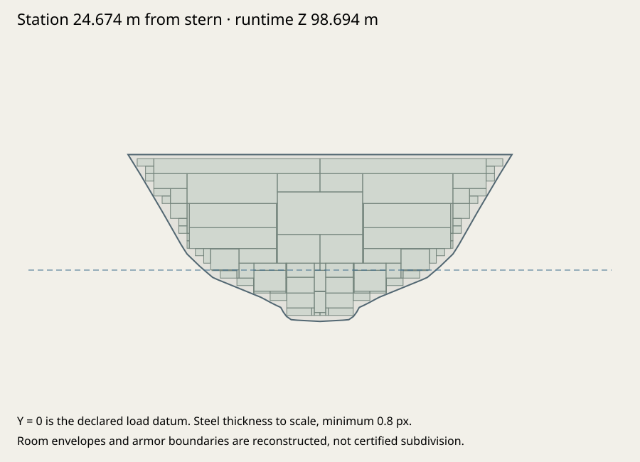
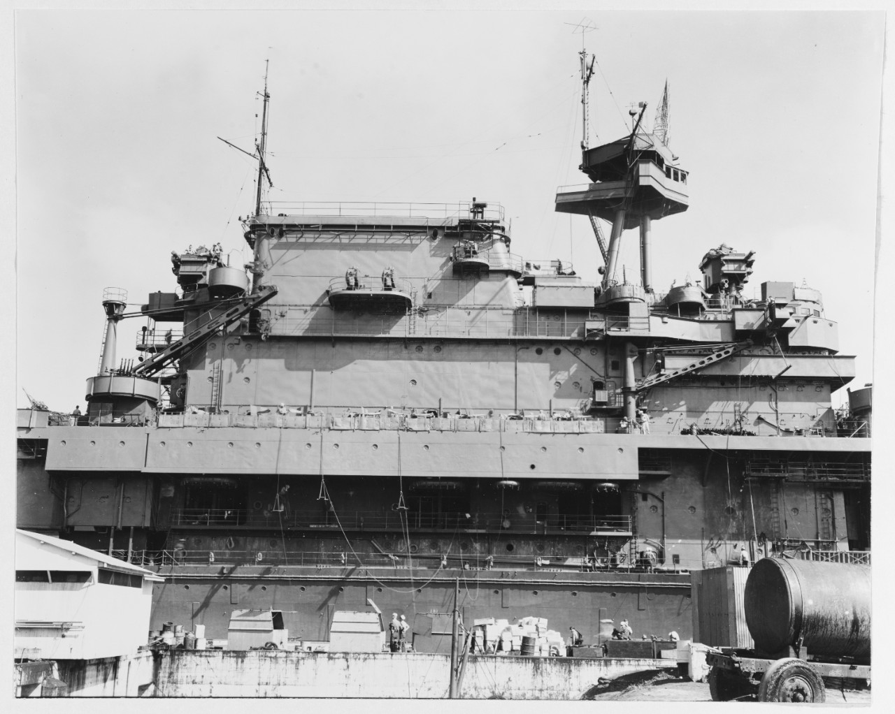
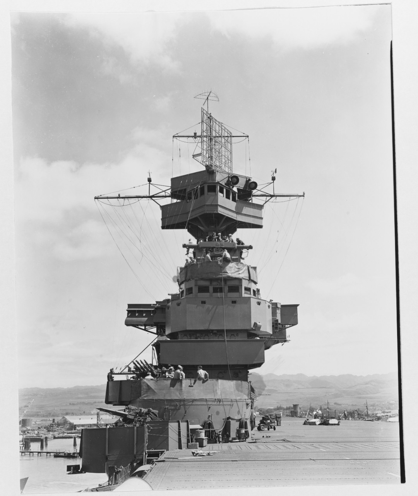

USS Enterprise (CV-6) · fidelity 01
June 1942/Midway; pre-bulge hull; 25 ft 11½ in reference draft. Matched pre-pass and current exported geometry, documented dimensions, structural probes and historical evidence. Both authored stages use the same twelve fixed cameras.
Build 5449db2f2a95 · 206,818 triangles · 222 meshes. Engineering verification is not historical certification.
Identical fixed cameras; no rescaling between authored stages.
Current GLB · 5449db2f2a95Preserved original · 187f267e59fc
Dimensions and mounting datums
| Measurement | Exported | Target | Deviation | Build tolerance | Evidence |
|---|
| length | 246.7356 m | 246.7356 m | -0.0000 m | ±0.025 m | cv6-contract-1934 |
|---|
| beam | 28.0416 m | 28.0416 m | +0.0000 m | ±0.025 m | cv6-contract-1934 |
|---|
| draft | 7.9121 m | 7.9121 m | -0.0000 m | ±0.025 m | cv6-contract-1934 |
|---|
Actual transformed hull triangles, not accessor bounds. 10,842 hull triangles; 0 nonmanifold edges; 0 degenerate faces. 8 room envelopes fit the loft. All 42 mounting-axis export checks pass. Tolerances check authored datums; source uncertainty remains separate.
Measurements, axes and probes · Modeling specification · Editable blueprint · Export/articulation checks
Hull, protection and provisional spaces

Authored hull and deckhouse surfaces take CPU hits. Exterior armor replaces nearby nominal skin; open hangars stay open. Gunhouse facets move with their original joints. Only hull contacts create sea breaches. Nominal plating, ballistics and flooding capacities are estimates.
midship-belt: Port main belt (101.6 mm) → Starboard main belt (101.6 mm)
protected-deck: Protective deck (38.1 mm)
bow: hull
stern: hull
bridge: flag-bridge
empty-air: MISS
All twelve registered before/after views
Live game review
Historical runtime evidence · reviewed export e968df81e5fb, current export 5449db2f2a95. Preserved pre-master-integration WebGPU run. A newer export is not silently certified by these earlier captures; see the fleet integration report.
Orca / WebGPU. UI battery firing and reset records are distinct from deliberately seeded structural shots. Canvas-only images omit the HTML HUD; they are direct live renderer captures, not Blender renders. Frame rates were affected by desktop load and tab occlusion; these are functional checks, not a performance certification. Exact-hash runtime records
Historical evidence and unresolved differences
No historical accuracy percentage. Exact offsets, many fitting locations, nominal plating and internal room boundaries remain approximations. See discrepancies.md and the source register. The contract scans are split sheets with configuration differences and host redistribution restrictions; they remain local, with no invented whole-ship overlay.
Discrepancy register · Full source register · Raster registrations · Credits

U.S. Navy 19-N-29696, March 1942: island, galleries, ladders and boat handling. Perspective photograph, not a dimensioned overlay. · 020644
U.S. Navy 19-N-29691, March 1942: forward island, CXAM-1 and forward quadruple mounts. · 020694Restricted local evidence, excluded from this pack
- cv6-1934-flight-gallery.jpg — Original contract flight/gallery arrangement, restricted scan retained locally. Split-sheet geometry is not falsely registered as one continuous 1942 plan. Source: cv6-contract-1934
- cv6-1934-midship-sections.jpg — C&R 189523 armor taper; contract versus 1942 extent remains qualified. Source: cv6-contract-1934
Source records
- cv6-contract-1934 — C&R contract drawings for aircraft carriers Nos. 5 and 6
Contract configuration is not automatically the 1942 as-built ship.; Some arrangement sheets carry proposed alterations; inspect individual sheet dates.; Scan host requests local reference use and sharing the archive link instead of republication.
- cv5-asbuilt-1940 — USS Yorktown (CV-5), Booklet of General Plans, corrected as built February 1940
CV-5 is class evidence; Enterprise-specific differences require CV-6 evidence.
- cv6-danfs — Enterprise VII (CV-6)
Header combines dimensions/conditions; does not supply exact Midway survey geometry.
- cv6-navsource-data — Enterprise as-built specifications
Individual facts require reconciliation with primary plans and dated CV-6 evidence.
- 020694 — USS Enterprise 19-N-29691
Perspective image: qualitative until camera and scale are matched.
- 020644 — USS Enterprise 19-N-29696
Perspective image: qualitative until camera and scale are matched.
- 020643 — USS Enterprise caption revised to March–early April 1942
Perspective image: qualitative until camera and scale are matched.
- 020622 — USS Enterprise 80-G-66121
Perspective image: qualitative until camera and scale are matched.
- 020619 — USS Enterprise US Navy photo from Pensacola
Perspective image: qualitative until camera and scale are matched.
- 020564a — USS Enterprise US Navy photo indexed by NavSource
Perspective image: qualitative until camera and scale are matched.
- cv5-propeller-secondary — USS Yorktown class ship data
Contains a contradictory rudder count. Do not use as authority for hull appendage arrangement.; Diameter, shaft exits, lateral spacing and pitch require primary CV-6 confirmation.
- fidelity-provisional-protection — Original fidelity-01 protection assumptions
Nominal hull/deckhouse plating and unsourced local gunhouse plate families are explicit gameplay assumptions. Baltimore 152.4 mm belt and 63.5 mm deck are provisional retained families; Ships' Data 1945 is dimensional/armament evidence, not their armor schedule.; Local plate extents, barbette sectors, transverse closures and many plate grades await primary schedules.; No blanket box is added over closed original gunhouse facets.
All production geometry and materials independently authored. Historical references are not runtime textures. No GameModels3D geometry or attachment data used. Original authoring inputs included; rebuild with the repository shared pipeline. Generated Blender scenes remain under assets.